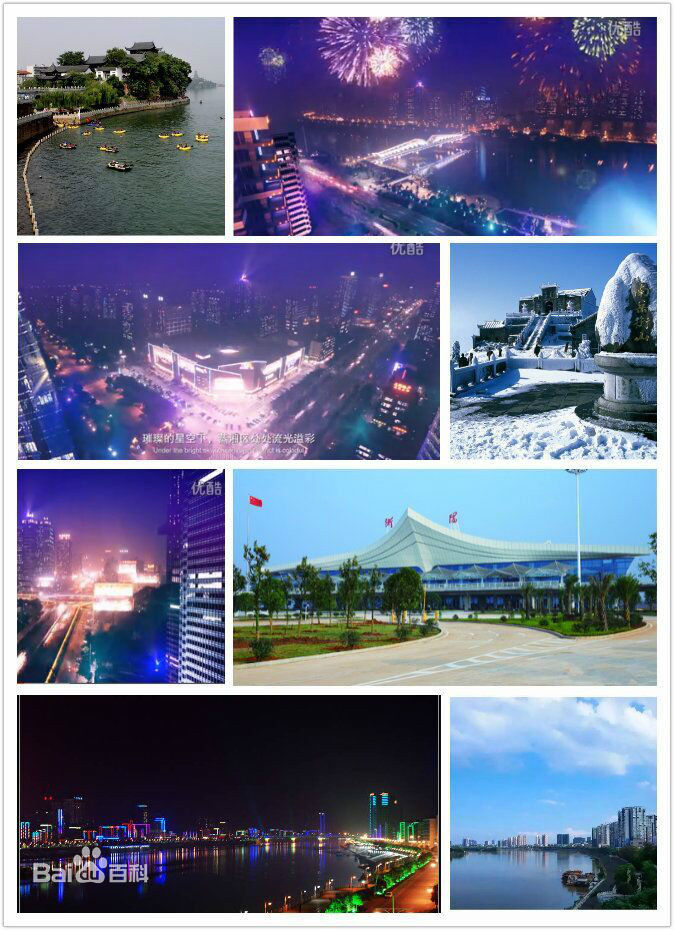

衡阳，为湖南省下辖地级市，是湖南省域副中心城市，湘南地区的政治、经济、军事、文化中心 。
衡阳下辖5区5县，代管2县级市，总面积15310平方公里，城区横跨湘江，是湖南省以及中南地区重要的交通枢纽之一，多条重要公路、铁路干线在此交会。
衡阳处于中南地区凹形面轴带部分，构成典型的盆地形势，属亚热带季风气候。截至2017年底，衡阳市全域常住人口720.53万人。
衡阳是中南地区重要的工业城市，是“中国制造2025”试点示范城市群城市之一 ，拥有湖南第一家综合保税区和国家级高新区，被定位为国家承接产业转移示范区以及全国加工贸易重点承接地 。
衡阳也是国家服务业综合配套改革试点城市、国家生态文明先行示范区，国家园林城市 ，中国“中国抗战纪念城” 。
2017年2月4日，《国务院办公厅关于批准衡阳市城市总体规划修编的通知》下发，明确将衡阳定位为湘南地区中心城市。

雁城古八景
雁峰烟雨实堪夸 石鼓江山锦绣华 花药春溪龙现爪 岳屏雪岭鸟喧哗 朱陵洞内诗千首 青草桥头酒百家 试看东洲桃浪暖 西湖夜放白莲花